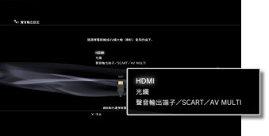
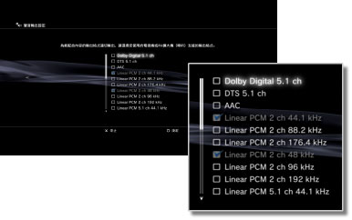
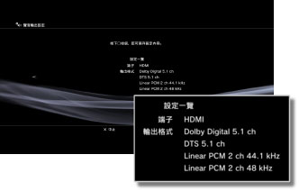

聲音輸出設定
設定PS3™聲音輸出。連接家庭劇院用的AV擴大機（喇叭）等，支援數位聲音輸出的音響裝置時，始需調整的設定。
1. |
確認您使用之音響裝置的支援格式。 |
|||||||||||||||||||||||
|---|---|---|---|---|---|---|---|---|---|---|---|---|---|---|---|---|---|---|---|---|---|---|---|---|
2. |
選擇 |
|||||||||||||||||||||||
3. |
選擇［聲音輸出設定］。 |
|||||||||||||||||||||||
4. |
選擇音響裝置的輸入端子。 
|
|||||||||||||||||||||||
5. |
選擇聲音輸出格式。  |
|||||||||||||||||||||||
6. |
確認設定內容。  |
|||||||||||||||||||||||
7. |
保存設定內容。 |
|||||||||||||||||||||||

 ，可回到之前的畫面重新設定。
，可回到之前的畫面重新設定。提示
- 購買時的初期設定會調整為從所有輸出端子輸出［Linear PCM 2ch］的聲音。變更聲音輸出設定後，即只能從設定的數種端子中輸出聲音。
- 變更聲音輸出設定後，即無法從複數的輸出端子同時輸出聲音。例如，使用HDMI連接線連接PS3™和電視機，並使用光纖線連接PS3™和音響裝置時，若將[聲音輸出設定]變更為[光纖]，即無法再從電視機輸出聲音。要從電視機輸出聲音時，請將設定變更為[HDMI]，或將
 （設定）＞
（設定）＞ （聲音設定）＞ [聲音同時輸出]設定為[開]。
（聲音設定）＞ [聲音同時輸出]設定為[開]。 - 於步驟5選擇［Linear PCM 2ch 88.2 kHz］或［Linear PCM 2ch 176.4 kHz］後，部分音響裝置可能會出現聲音突然中斷或無法輸出聲音的情形。
- 使用HDMI連接線，遊玩PlayStation®2／PlayStation®規格軟件時，僅能以［Linear PCM 2ch］輸出聲音。若要輸出以Dolby Digital或DTS記錄的聲音，請使用數位光纖連接線連接PS3™和音響裝置，並將［聲音輸出設定］調整為［光纖］。
- 若使用HDMI連接線連接不支援HDCP（High-bandwidth Digital Content Protection）規格的裝置，將無法顯示PS3™輸出的影像與聲音。
重要
- 部分PlayStation®2、PlayStation® 規格之軟件可能會於插入PS3™啟動時，出現與以往之PlayStation®2 或PlayStation® 主機不同的動作，或是無法正常啟動的現象。
- 此外，部份PS3™並不支援PlayStation®2規格軟件的播放。詳細請參閱［關於可播放的光碟種類］、各區域的官方網站或主機隨附的使用說明書。